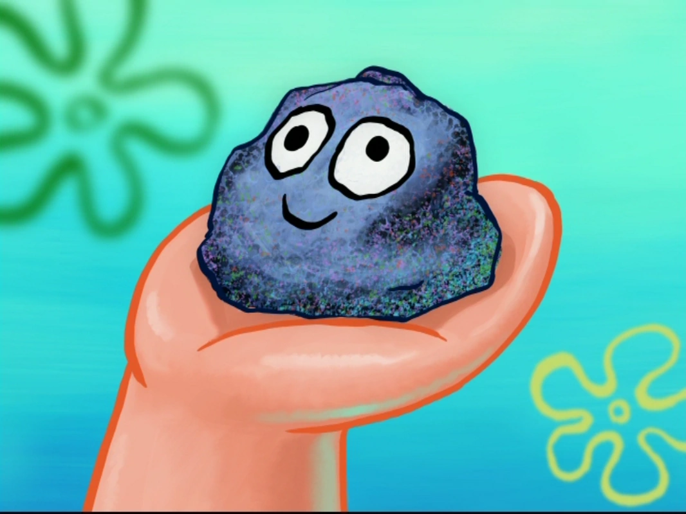

Hi again.
This section is about how to get a pet rock.
First, you need to find a rock.
After you find a rock, you need to give it a face, a name, and other stuff that a pet might have (e.g. a collar).
Lastly, you will have to arrange a meeting with a supreme court judge to get your rock legally adopted. Illegal ownership of pet rocks can have severe consequences, such as being arrested or having your rock taken away from you.
